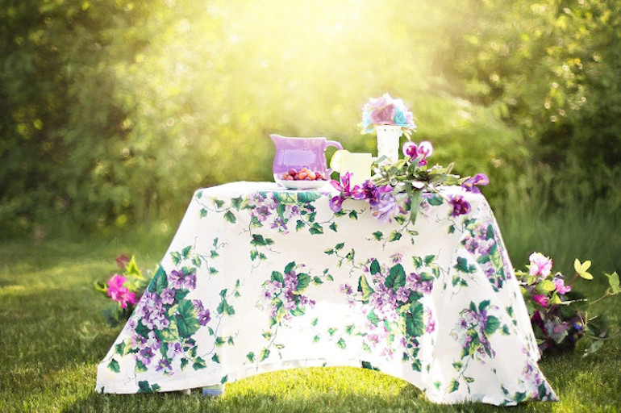
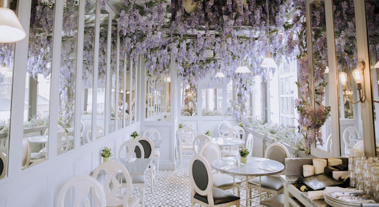

Bröllop
Specialmeny
Vi har förberett en speciell bröllopstårta för din speciella dag. Elegant, underbart och gott. Vi kan dekorera ätbara blommor eller lägga till muffins om du vill. Vi kan också göra originalkakor åt dig. Kontakta oss gärna.
Bröllop i trädgården
Vår trädgård är omgiven av blommor och träd och skålar med härliga kakor och vin och champagne. Det är en fantastisk miljö att fira deras avresa.
Om bröllopssalen
Inte bara trädgården utan också rummet är trevligt. Rummet är fullt av blommor och ljus. Massor av blommor på sommaren och levande ljus på vintern firar ditt jubileum.
